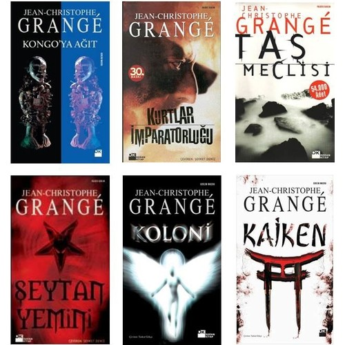

Merhaba, ben Mert ÇİLLİ! Tekirdağ da yaşıyorum. 8 yıldır ayakkabı tasarımcısı olarak çalışmaktaydım. Şimdi yeni bir alana ve yeni bir mesleğe geçmek için Patikanın sağlamış olduğu Frontend Başlangıç kursuna girdim. Frontend Developer olmak için ilk adımımı attım.Polisiye-Gerilim türünde kitapları okumayı seviyorum.
Jean Christophe Grange yazarının kitapları çıktığı gibi alırım. Ve yazarın eserlerini okumayı seviyorum.
Fransız yazar Jean-Christophe Grangé 15 Temmuz 1961’de Paris’te doğdu. Serbest gazeteci olarak çeşitli haber ajansları ve gazeteler için çalıştı.
Leyleklerin Uçuşu adlı ilk romanı 1994'te yayımlandı. Bu kitap Fransa'da 450.000 adet sattı ve sekiz bölümlük bir TV dizisi haline getirildi.